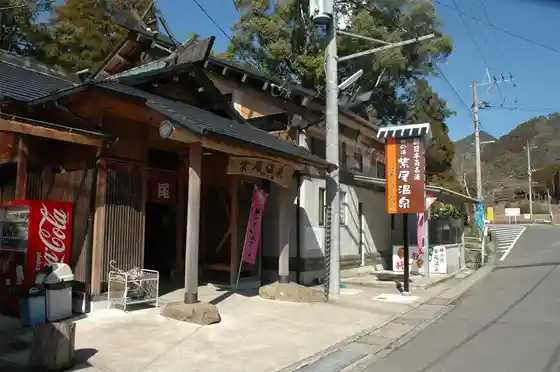
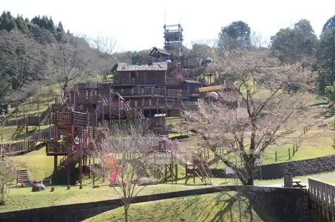
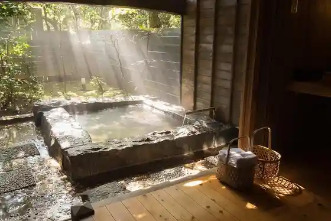
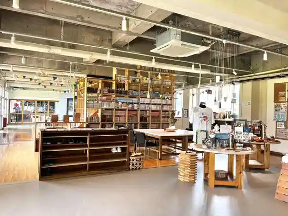

Murasaki O Onsen Sato
Satsuma, Kagoshima · 0996-53-0525 · Official / source link

Niterra Nittoku Su Park Tekku WKS Park (Kako Shima Prefectural Hokusatsu Koiki Park)
Satsuma, Kagoshima · 0996-21-3939 · Official / source link

Tezuka ryokan
Satsuma, Kagoshima · 0996-55-9311 · Official / source link

Umashiki Sato Kirara no Raku Ko
Satsuma, Kagoshima · 0996-53-4760 · Official / source link

Miyanojo Onsen Sato
Satsuma, Kagoshima · 0996-53-0525 · Official / source link
Hatago Shibi So
Satsuma, Kagoshima · 0996-59-8001 · Official / source link
Miyanojo Dentokogei Center
Satsuma, Kagoshima · 0996-52-1313 · Official / source link
Tsuruta Damu Park
Satsuma, Kagoshima · 0996-59-2030 · Official / source link
Murasaki O Kuei Taishu Bath
Satsuma, Kagoshima · 0996-59-8975 · Official / source link
Murasaki Oyama
Satsuma, Kagoshima · 0996-53-1111 · Official / source link
Satsuma Biidoro Kogei
Satsuma, Kagoshima · 0996-58-0141 · Official / source link
Nagano Tetsudo Memorial Museum no Sakura Namiki
Satsuma, Kagoshima · 0996-24-8950 · Official / source link
Hiiragi no Higan Hana
Satsuma, Kagoshima · 0996-24-8950 · Official / source link
Murasaki O Shrine
Satsuma, Kagoshima · 0996-59-3111 · Official / source link
Hisatomi Ki Ku no Kosumosu Hatake (Dai 1 Dai 2 Dai 3)
Satsuma, Kagoshima · 0996-24-8950 · Official / source link
Hirose no Hasu no Hanahata
Satsuma, Kagoshima · 0996-24-8950 · Official / source link
Miyanojo Bunka Center
Satsuma, Kagoshima · 0996-53-1732 · Official / source link
Miyanojo Rekishi Shiryo Center
Satsuma, Kagoshima · 0996-52-3340 · Official / source link
Taishaku Ten Park
Satsuma, Kagoshima · 0996-53-1111 · Official / source link
Tahara no Tanada no Suiren
Satsuma, Kagoshima · 0996-24-8950 · Official / source link
Shu Ko Tera Park
Satsuma, Kagoshima · 0996-53-1111 · Official / source link
Nagano Kanayama Ato (Goma Me Koko Ato)
Satsuma, Kagoshima · 0996-57-0970 · Official / source link
Shu Ko Tera Hakaishi Gun Rekishi Shiryo Center
Satsuma, Kagoshima · 0996-52-3340 · Official / source link